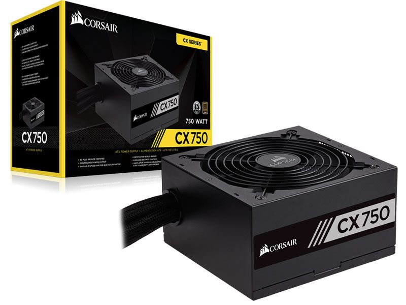

Eficiência certificada pelo 80 PLUS Gold - A certificação Gold garante alta eficiência com menos excesso de calor e menor custo operacional. - Conjunto de cabos totalmente modulares - A instalação é mais rápida, uma vez que você pode montar a fonte de alimentação no gabinete primeiro e depois prender apenas os cabos que você precisa. - Capacitores de 105º C 100% japoneses - Componentes internos de altíssima qualidade asseguram fornecimento de energia constante e confiabilidade em longo prazo. - Modo de ventoinha Zero RPM - Porque a ventoinha não é ligada até que seja necessária, você aproveitará de operação praticamente silenciosa em cargas baixas e médias. - Menos ruído - A ventoinha de 135mm ultra silenciosa com rolamentos Rifle, fornece excelente fluxo de ar a um nível excepcionalmente baixo de ruído. Sua velocidade é controlada termicamente ficando simplesmente silenciosa no modo ocioso. Mesmo quando você está exigindo muito do seu sistema os níveis de ruídoserão baixos devido ao grande diâmetro da ventoinha.
